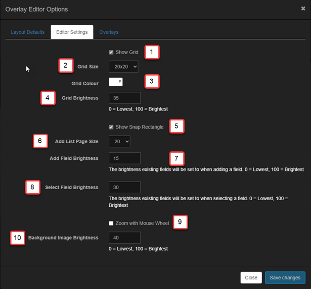

What are overlays?
An overlay is information that is added, i.e., overlayed, on top of each captured image. This often includes the time the image was taken, the sensor temperature, and the exposure length, but can include any other text or images you want.
Allsky has always had the ability to add text to the captured image but in a very limited way. There are now two ways to add an overlay. You choose the method via the Overlay Method setting in the WebUI's Allsky Settings page.
- The newer overlay method has many new features and is significantly more flexible than the older method. For example, you can add an overlay ONLY to the live image but not to saved images. You can also easily add images and text using a drag-and-drop method.
- The legacy method is what's been in Allsky since it began. It allows only text to be placed in a single location with limited formatting.
The overlay method will be the default in the next version of Allsky, and will be the ONLY method in the version after that.
New Overlay Method
The overlay method allows almost any piece of information to be added to the captured Allsky image. Some of the key features of the include:
- Overlay Manager - The main application for managing overlays:
- Drag and Drop interface - Fields can be dragged around the screen to position them.
- Customisable Interface - The Overlay Manager user interface can be highly customised to your requirements.
- Font Manager - You can upload any TrueType font and use it in the overlays, or use any font already on your Pi.
- Variable Manager - Provides a library of fields that you can add to the image. You can also add your own fields.
- Image Manager - Allows you to upload and manage images you wish to add to the image.
- Text Fields - This allows text to be added to the image.:
Key features include:
- Ability to add any data from Allsky to the image
- Ability to add custom (extra) data to the image
- Any TrueType font can be used
- Text can be any colour or size
- Text can be rotated
- Image Fields - This allows images to be added to the image:
- Any image can be uploaded
- Images can be scaled and rotated and their opacity changed
How overlays work
The Overlay Manager is what you use to define what information you want on the captured images and where it should go. Once you have specified that information, you won't use the manager again until you want to change something.
The Overlay Module is invoked every time an image is captured and places the information you specified in the Overlay Manager onto the images. This module is one of several modules that can be invoked after every image is captured.
In order to use the the Overlay Module you must enable it by going to the WebUI and clicking on the Allsky Settings link, then selecting overlay in the Image Overlay setting. This disables all the remaining settings in the Image overlay settings section (you will specify those items in the Overlay Manager).
In the Overlay Manager you specify what information you want to go where, and what it should look like. For example, you want the date and time the image was taken to be in blue, 12 point font in the upper left of the image and a compass rotated 20 degrees so it's pointing north in the upper right of the image. You also have a graph of weather information you want on the bottom of the image, but because it will hide some of the image you want it to be partially transparent.
After Allsky captures an image it passes that image as well as information about the image to the Overlay Module. Examples include the time the image was taken, the exposure length, and the sensor temperature. This information is put into system variables that can be used per you configuration in the Overlay Manager, which then:
- Replaces the system variables with their values and adds them to the captured image.
- Replaces any module variables with their values and adds them to the captured image.
- Adds any images you specified to the captured image.
Allsky Fields and Variables
The heart of the Overlay Manager is fields. There are two types of fields:
- Text fields consist of text and/or system and module variables.
Variables are enclosed within
${}and replaced with their values before being added to the captured image. - Image fields contain images - pictures, graphics, or anything you want. Common uses are logos, weather graphs, and compasses.
Some example fields and variables are:
| Field | Example Output | Description |
|---|---|---|
${DATE} |
24/10/22 | Displays the date from the DATE system variable. The date can be formatted in a variety of ways, see the section on formatting fields for details. |
Date: ${DATE} |
Date: 24/10/22 | Displays the string "Date: " then the date from the DATE system variable. As above, the date can be formatted in a variety of ways. |
Date: ${DATE} ${TIME} |
Date: 24/10/22 23:12:34 | Displays the date from the DATE system variable and the time from the TIME system variable. Both variables can be formatted in a variety of ways. |
Exposure |
Exposure | Simply displays the text "Exposure". |
Variables can come from a variety of sources:
- Allsky - The main Allsky application generates system variables.
- Modules - Any module can create variables.
- Extra Data - Typically created by an application external to Allsky.
Allsky variables
The table below shows the most commonly used system variables produced by Allsky; a complete list can be found in the Field Manager.
All the variables refer to the current image.
| Variable | Example Data | Description |
|---|---|---|
${DATE} |
20221024 | The date the image was taken. |
${TIME} |
221623 | The time the image was taken. |
${GAIN} |
4.692540 | The gain used for the image. |
${AUTOGAIN} |
1 | 1 if auto-gain was enabled, 0 if disabled. |
${sAUTOGAIN} |
(auto) | A string containing either (auto) if auto-gain was
enabled, or blank. Useful to put after the gain, e.g.,
Gain: ${GAIN} ${sAUTOGAIN}. |
${EXPOSURE_US} |
90000000 | The exposure of the image in micro seconds. |
${sEXPOSURE} |
90.0 sec | The exposure of the image in a human readable format.
The format changes depending on the exposure time,
for example, very short exposures may be 218.48 ms
whereas a long exposure may be 45.3 sec.
|
${AUTOEXPOSURE} |
1 | 1 if auto-exposure was enabled, 0 if auto-exposure was disabled. |
${sAUTOEXPOSURE} |
(auto) | A string containing either (auto) or blank -
similar to ${sAUTOGAIN}. |
${TEMPERATURE} |
36 | The temperature of the camera sensor, if available.
This does NOT include the C or F for
centigrade or fahrenheit so you'll need to add them yourself, e.g.,
Sensor Temp: ${TEMPERATURE} C. |
${MEAN} |
0.108564 | The mean value brightness for the image. The values for ZWO cameras are from 0 (pure black) to 255 (pure white). The values for RPi cameras are from 0.0 (pure black) to 1.0 (pure white). |
${BRIGHTNESS} |
0 | The brightness you set in the Brightness setting in the WebUI. |
Module variables
Any module can create variables for use in the Overlay Module. For this reason it is important that the Overlay Module runs as late as possible within the module flow.
Module variables are used the same way system variables are.As an example, the Star Count Module creates a
variabled called ${STARCOUNT} and passes it to the next module.
Please refer to the documentation on each module for any variables that it makes available.
Extra data variables
Allsky was always able to add additional information to captured images but in a limited way. The Overlay Manager provides a much more sophisticated method for making this data available.
This is an advanced topic and as such you will need to have an understanding of the Linux file system and how to manage files within it.
All extra data now resides in the ~/allsky/tmp/extra directory which the Overlay Manager will use to create variables.
Let's assume you want to add weather data to your images. You first need to create or obtain a program that gathers that data and writes it to a file. How you obtain that file is outside the scope of this documentation, but the program needs to write the data in a specific format in a file called ~/allsky/tmp/extra/xxxxx (replace the xxxxx with an appropriate name). This file can be either a simple text file or preferably a json file since it provides a lot more flexibility.
The extra directory will normally be re-created after every reboot so don't save anything there that needs to remain permanately.
Text Files
Text files must end with a .txt extension. The format is a simple name=value structure as shown below:
| File Contents | Allsky Result | ||||||||||
|---|---|---|---|---|---|---|---|---|---|---|---|
|
AGTEMP=14.0C
AGHUMIDITY=90.1% AGHEATERCURRENT=215 AGSTAT=Night |
|
The data in these files could become 'old' if the application creating them fails or is not running. To allow Allsky to detect this you can tell Allsky to ignore the files in the extra directory when they are over a certain age. For .txt files this value is specified in the Overlay Manager settings dialog.
JSON Files
json files are more complex in their structure but provide a lot more flexibility for you to add your own variables and even control the attributes of a field.
| This json will produce exactly the same variables as the txt file described above. The data will expire as defined in the Overlay Manager settings dialog. | This json includes expiry times for some of the elements. In this case the expiry time for the relevant elements will be used and the Overlay Manager dialog expiry setting for the remaining variables. | This json, which has been truncated for brevity, includes all of the attributes that a field can set. It also adds an image. |
|
{
"AGTEMP": {
"value": "14.0C"
},
"AGHUMIDITY": {
"value": "90.1%",
},
"AGHEATERCURRENT": {
"value": "215",
},
"AGSTAT": {
"value": "Night",
},
}
|
{
"AGTEMP": {
"value": "14.0C",
"expires": 600
},
"AGHUMIDITY": {
"value": "90.1%",
"expires": 600
},
"AGHEATERCURRENT": {
"value": "215",
},
"AGSTAT": {
"value": "Night",
},
}
|
{
"AGTEMP": {
"value": "14.0C",
"x": 800,
"y": 200,
"fill": "#333333",
"font": "ledsled",
"fontsize": 40,
"opacity": 0.2,
},
"AGHUMIDITY": {
"value": "90.1%",
},
"AGCLOUD": {
"value": "11%",
},
"AGSCOPE": {
"image": "crosshair.png",
"x": 300,
"y": 400,
"scale": 0.1,
"expires": 6000,
"opacity": 0.5
}
}
This example demonstrates some important points: |
The txt/json files must be created by some application outside of Allsky and there are a few things that must be considered when creating the files:
- Variable Name - Since you could end up conflicting with the names
of Allsky system variables its best to prefix your own variables. This will help
prevent any clashes. In the examples above the variables are prefixed with
AG. - Permissions - You must ensure that the files created in the extra directory can be read by Allsky. It is up to the application creating them to ensure the permissions are correct. The Overlay Manager will silently ignore any files it cannot read.
The Main Overlay Manager User Interface
The Overlay Manager consists of two key areas: the toolbar and working area. The working area contains the latest image captured in the background.
There are various settings to control how visible the image is. A grid is also overlayed on the working area by default to allow easier placement of fields, and there are various settings to control how the grid is displayed.

| Annotation | Icon | Description |
|---|---|---|
|
This is enabled when any changes have been made that require saving. This icon is only enabled when leaving certain fields. For example if you change a field label you must click out of the field before this icon will be enabled. |
||
|
Click to add a new text field or label. When adding a field you must manually enter the correct field label. |
||
|
Click to add an image to the overlay. The image must have previously been uploaded using the Image Manager. |
||
|
Click to delete the selected field. The "del" or "delete" keys on the keyboard can also be used. The button is only enable when a field is selected. |
||
|
Click to add a pre-defined field from the Available Variables editor. |
||
|
Click to display sample data in each of the fields. This is useful to see what actual data will look like on the overlay so you can better align fields. |
||
|
Click to zoom in on the image. |
||
|
Click to zoom out of the image. |
||
|
Click to zoom to the full size of the image. |
||
|
Click to zoom to fit the image on the screen. |
||
|
Displays the Font Manager. See the Font Manager section for more details. |
||
|
Displays the Image Manager. See the Image Manager section for more details. |
||
|
Displays the Overlay Manager settings dialog which allows you to change settings of the manager itself. See the Overlay Manager Settings section for more details. |
||
|
The main working area. The image here is the last one captured by Allsky It's best to create overlays when Allsky is running since you will have access to the latest image. Whilst there is nothing stopping you creating overlays when Allsky is not running bear in mind that you may not be using all of the available screen area since the Notification images (e.g., "Allsky is starting") may be smaller than those captured by your camera. |
Using The Overlay Manager
The following sub-sections detail the basic operation of the Overlay Manager and how to manage fields and their contents.
The Font Manager
The Font Manager supports all mainstream browser fonts and allows you to upload any TrueType font for use on overlays.

|
|
To use a font it must be installed in the Font Manager and there are two ways to do this, as described next.
Install from daFont.com
In a separate browser window, navigate to the font page on http://daFont.com that you wish to install, for example https://www.dafont.com/led-sled.font. Copy the font URL to the clipboard. In the Font Manager click the Add Font button and enter the font URL. The font will be installed and the installed fonts list refreshed.
Installation via a zip file
First ensure that the font(s) you wish to installed are contained within a zip file. You can create the zip file yourself or download from a place like https://fonts.google.com/.
In the Font Manager click the Upload Font button and browse to the zip file. The fonts will be extracted from the zip file and installed.
When installing fonts if any issues arise the Font Manager will display a notice indicating why the font(s) could not be installed.
The Image Manager
The Image Manager allows you to upload images for use on overlays.

|
|
Adding fields to the overlay
There are three ways to add fields to the overlay, two for text fields and one for images.
- Manually add a new text field.
Click the Add New Text Field icon () on the toolbar to display the Text Properties editor. Enter some text and/or variables in the Item field of the editor. The new field will initially be positioned in the top left of the captured image but can be dragged to wherever you want and its properties set in the editor. The property editors are described in detail later in this document. - Add fields via the Available Variables editor.
Click the Available Variables icon () on the toolbar to display the and navigate to the variable you require. Click the plus symbol to add the variable to the overlay. The field will start off with just the variable you selected; you can add text or other variables to the field later. Initially the field will be positioned at the top left but can be dragged to wherever you want and its properties changed. - Add an image field.
Click the Add New Image Field icon () to display the Image Properties editor. Select the image you want from the drop down and then move it to the overlay, resizing and rotating as required. The image must have first been uploaded via the Image Manager as described above.
The property editors
The property editors allow setting of the various elements of text and image fields.
Text Property Editor
 |
When using the 'Extra Data' files in json format all of the attributes can be overridden in the json file allowing for external control of how fields appear. For example, you may want the CPU temperature to turn red if it gets too hot. |
Image Property Editor
 |
|
Variable Manager
The Variable Manager provides a mechanism for storing variables and text to create fields. Allsky ships with a default set of variables but this can be amended as required.
This manager provides a quick method for storing details of the available variables and adding them to the overlay. The manager comes preinstalled with a set of system variables that can be modified but not deleted. You can also add your own variables to the manager; typically these will come from modules or extra data.
The manager consists of two tabs. The first, 'Allsky Variables' is the library of available variables and the second, 'All Variables' is a list of all variables.
Allsky Variables tab

|
The 'Allsky Variables' tab shows all variables available to use on overlays. Three icons are available for each variable.
The 'Add Variable' button allows you to add your own variables and will display the 'Add Variable' dialog box for entering information about the variable. The search option can be used to quickly search for a variable by name. The search is not case sensitive. |
 button adds the field to
the overlay. It will initially be added at the top left allowing
you to drag it to where ever required. The Text Properties
editor will also be displayed and populated with the relevant
data for the variable.
button adds the field to
the overlay. It will initially be added at the top left allowing
you to drag it to where ever required. The Text Properties
editor will also be displayed and populated with the relevant
data for the variable. button allows you to
edit the field. If the variable is a system variable then only
certain fields can be changed.
button allows you to
edit the field. If the variable is a system variable then only
certain fields can be changed. button
deletes a variable. You can only delete variables that you added.
button
deletes a variable. You can only delete variables that you added.All Variables tab
|
Sometimes it can be hard to find variables from newly added modules or extra data. This tab lists every variable that Allsky can see and the last value it had. This list provides a faster way to add variables.
If the add button is disabled then it means that the variable is alread in the 'Allsky Variables' list. IMPORTANT: This list is only populated if the debug mode is enabled for the Overlay Module in the Module Manager. |
The Add/Edit Variable dialog box

|
|
Formatting Variables
Date, Time and Number fields can be formatted to alter their appearance. Each variable type has a different set of codes for formatting. The codes are loosely based on Python.
Formatting Numbers
| Directive | Meaning | Output Format |
|---|---|---|
| %0f | Formats a number to 0 decimal places | 2 |
| %2f | Formats a number to 2 decimal places | 2.00 |
Date and Time formats
| Directive | Meaning | Output Format |
|---|---|---|
| %a | Abbreviated weekday name. | Sun, Mon, ... |
| %A | Full weekday name. | Sunday, Monday, ... |
| %w | Weekday as a decimal number. | 0, 1, ..., 6 |
| %d | Day of the month as a zero added decimal. | 01, 02, ..., 31 |
| %-d | Day of the month as a decimal number. | 1, 2, ..., 31 |
| %b | Abbreviated month name. | Jan, Feb, ..., Dec |
| %B | Full month name. | January, February, ... |
| %m | Month as a zero added decimal number. | 01, 02, ..., 12 |
| %-m | Month as a decimal number. | 1, 2, ..., 12 |
| %y | Year without century as a zero added decimal number. | 00, 01, ..., 99 |
| %-y | Year without century as a decimal number. | 0, 1, ..., 99 |
| %Y | Year with century as a decimal number. | 2013, 2019 etc. |
| %H | Hour (24-hour clock) as a zero added decimal number. | 00, 01, ..., 23 |
| %-H | Hour (24-hour clock) as a decimal number. | 0, 1, ..., 23 |
| %I | Hour (12-hour clock) as a zero added decimal number. | 01, 02, ..., 12 |
| %-I | Hour (12-hour clock) as a decimal number. | 1, 2, ..., 12 |
| %p | Locale's AM or PM. | AM, PM |
| %M | Minute as a zero added decimal number. | 00, 01, ..., 59 |
| %-M | Minute as a decimal number. | 0, 1, ..., 59 |
| %S | Second as a zero added decimal number. | 00, 01, ..., 59 |
| %-S | Second as a decimal number. | 0, 1, ..., 59 |
| %f | Microsecond as a decimal number, zero added on the left. Please note that Allsky's times are only to the nearest second. | 000000 ... 999999 |
| %z | UTC offset in the form +HHMM or -HHMM. | +0100 |
| %Z | Time zone name. | Europe/London |
| %j | Day of the year as a zero added decimal number. | 001, 002, ..., 366 |
| %-j | Day of the year as a decimal number. | 1, 2, ..., 366 |
| %U | Week number of the year (Sunday as the first day of the week). All days in a new year preceding the first Sunday are considered to be in week 0. | 00, 01, ..., 53 |
| %W | Week number of the year (Monday as the first day of the week). All days in a new year preceding the first Monday are considered to be in week 0. | 00, 01, ..., 53 |
Overlay Manager Settings
The Overlay Manager has a settings dialog that can be used to manage settings for both the current overlay and the Overlay Manager itself.
Layout Defaults tab
The 'Layout Defaults' are settings that apply to the current layout.

|
|
The Satellite and Planet options can be CPU intensive and are disabled by default. When enabling these please use the Module Manager's debug option to ensure these settings are not causing an issue with the capture process. Details of how to use the Module Manager debug option are covered in the Module Manager section.
Editor Defaults tab
'Editor Defaults' are default settings that apply to the Overlay Editor.
|  |
|
Satellites / Sun / Moon / Planets
The Overlay Manager can generate data for celestial bodies. Normally these are disabled unless the relevant options are selected in the Overlay Manager settings. All calculations are based upon the latitude and longitude in the WebUI.
The Sun
The Sun must be enabled in the Overlay Manager settings before any variables are created.
For the Sun various timings are generated for sunrise/sunset etc.
The Sun times furing daytime capture are for the current day. During nighttime capture they are for the period the night time capture is in progress, i.e. prior to midnight the sunset times are for the current day and the sun rise for the next day. After midnight the sunset times are for the previous day and the sunrise times for the current day.
There are times when there is no Astronomical darkness.
In these cases SUN_NIGHT and SUN_NIGHTEND
will be set to the value defined in the
Overlay Module settings,
in the Module Manager.
The following Sun-related variables are available in the Variable Manager:
| Variable | Description |
|---|---|
| ${SUN_AZIMUTH} | The Azimuth of the Sun with respect to the Allsky camera location. |
| ${SUN_ELEVATION} | The Elevation of the Sun with respect to the Allsky camera location. |
| ${SUN_DARKEST} | Darkest moment of the night, Sun is in the lowest position. |
| ${SUN_NIGHTEND} | Morning astronomical twilight start. |
| ${SUN_NAUTICALDAWN} | End of Civilian twilight. |
| ${SUN_DAWN} | Morning nautical twilight ends, morning civil twilight starts. |
| ${SUN_SUNRISE} | Top edge of the sun appears on the horizon. |
| ${SUN_SUNRISEEND} | Sunrise ends (bottom edge of the Sun touches the horizon). |
| ${SUN_NOON} | Solar noon (Sun is in the highest position). |
| ${SUN_SUNSETSTART} | Sunset starts (bottom edge of the Sun touches the horizon). |
| ${SUN_SUNSET} | Sunset (Sun disappears below the horizon, evening civil twilight starts). |
| ${SUN_DUSK} | Dusk (evening nautical twilight starts). |
| ${SUN_NAUTICALDUSK} | Nautical dusk (evening astronomical twilight starts). |
| ${SUN_NIGHT} | Night starts (dark enough for astronomical observations). |
The Moon
The Moon must be enabled in the Overlay Manager settings before any variables are created.
The following Moon-related variables are available:
| Variable | Example Value | Description |
|---|---|---|
| ${MOON_AZIMUTH} | 262° | Azimuth of the Moon. |
| ${MOON_ELEVATION} | -24.65° | Elevation of the Moon. |
| ${MOON_ILLUMINATION} | 7.3 | Illumination of the Moon in %. |
| ${MOON_SYMBOL} | Using this variable and the Moon Font will display the current phase of the Moon. |
The planets
The planets must be enabled in the Overlay Manager settings before any variables are created.
The following planet-related variables are available:
| Variable | Example Value | Description |
|---|---|---|
| ${MERCURYALT} | -27deg 06' 55.2" | The Altitude of Mercury in Degrees. |
| ${MERCURYAZ} | 292deg 07' 41.6" | The Azimuth of Mercury. |
| ${MERCURYVISIBLE} | No | Yes/No to indicate if Mercury is visible. This does NOT mean its visible to the naked eye just that its above the horizon. |
| ${VENUSALT} | -25deg 03' 52.8" | The Altitude of Venus in Degrees. |
| ${VENUSAZ} | 282deg 23' 21.9" | The Azimuth of Venus. |
| ${VENUSVISIBLE} | No | Yes/No to indicate if Venus is visible. This does NOT mean its visible to the naked eye just that its above the horizon. |
| ${MARSALT} | 03deg 56' 06.7" | The Altitude of Mars in Degrees. |
| ${MARSAZ} | 55deg 12' 53.7" | The Azimuth of Mars. |
| ${MARSVISIBLE} | Yes | Yes/No to indicate if Mars is visible. This does NOT mean its visible to the naked eye just that its above the horizon. |
| ${JUPITERALT} | 29deg 49' 30.9" | The Altitude of Jupiter in Degrees. |
| ${JUPITERAZ} | 142deg 19' 20.8" | The Azimuth of Jupiter. |
| ${JUPITERVISIBLE} | Yes | Yes/No to indicate if Jupiter is visible. This does NOT mean its visible to the naked eye just that its above the horizon. |
| ${SATURNALT} | 20deg 50' 21.6" | The Altitude of Saturn in Degrees. |
| ${SATURNAZ} | 187deg 21' 15.3" | The Azimuth of Saturn. |
| ${SATURNVISIBLE} | Yes | Yes/No to indicate if Saturn is visible. This does NOT mean its visible to the naked eye just that its above the horizon. |
| ${URANUSALT} | 21deg 21' 51.3" | The Altitude of Uranus in Degrees. |
| ${URANUSAZ} | 90deg 10' 23.5" | The Azimuth of Uranus. |
| ${URANUSVISIBLE} | Yes | Yes/No to indicate if Uranus is visible. This does NOT mean its visible to the naked eye just that its above the horizon. |
| ${NEPTUNEALT} | 29deg 43' 44.2" | The Altitude of Neptune in Degrees. |
| ${NEPTUNEAZ} | 150deg 24' 55.8" | The Azimuth of Neptune. |
| ${NEPTUNEVISIBLE} | Yes | Yes/No to indicate if Neptune is visible. This does NOT mean its visible to the naked eye just that its above the horizon. |
| ${PLUTOALT} | 10deg 07' 14.9" | The Altitude of Pluto in Degrees. |
| ${PLUTOAZ} | 207deg 49' 18.1" | The Azimuth of Pluto. |
| ${PLUTOVISIBLE} | Yes | Yes/No to indicate if Pluto is visible. This does NOT mean its visible to the naked eye just that its above the horizon. |
Satellites
The Overlay Manager can generate position elements for satellites. To enable this enter a comma separated list of NORAD IDs in the Overlay Manager's settings.
To find NORAD IDs browse to the Celestrak website and search for the desired object. Then enter the IDs as a comma-separated list in the Overlay Manager's settings.

|
In this example we have entered two Norad IDs:
|
This will generate the following variables that can be used in overlays.
| Variable | Example Value | Description |
|---|---|---|
| ${25544ALT} | -32deg 41' 34.3" | The Altitude of the ISS in Degrees. |
| ${25544AZ} | 58deg 46' 59.3" | The Azimuth of the ISS in Degrees. |
| ${25544VISIBLE} | No | Yes/No to indicate if the ISS is above the horizon (it may or may not be visible to the naked eye). |
| ${20580ALT} | -32deg 41' 34.3" | The Altitude of the Hubble in Degrees. |
| ${20580AZ} | 58deg 46' 59.3" | The Azimuth of the Hubble in Degrees. |
| ${20580VISIBLE} | No | Yes/No to indicate if the Hubble is above the horizon (it may or may not be visible to the naked eye). |
Legacy Overlay Method
With the legacy overlay method you can add text to an image automatically or manually, or add images manually.
Automatically add text
In the Allsky Settings page of the WebUI under the Image overlay settings section, look for the "Show" settings, like Show Exposure. Turning any of these settings on will cause that information to be added to the overlay. You can also add your own single line of text by entering it into the Text Overlay field. This line is added after the optional time and before the "Show" data fields.
Allsky can also add text from a file you create using the
Extra Text File and
Max Age Of Extra (Text File) settings.
Allsky reads the
Extra Text File file and overlays the contents onto your images.
The file can have multiple lines.
The Max Age Of Extra
setting determines how old in seconds the file can be before it is no longer used.
Set it to 0 to always display the information.
This file is often used to add text that is updated regularly, for example, weather information.
See the Extra Text File example below for an example
of how to use this file.
When considering what to include in the file,
remember the size of your image - do you care if the text covers the image, for example?
The contents of the text file will go below the optional time, sensor temperature,
and other information.
You can format the text that's displayed. The optional time and Text Overlay line are formatted using the Font Color and other settings; the remaining text is formatted with the Small Font Color setting. The small font's size is 80% of the size of the large fonts. You'll want to play around with these values to get the best results based on your sensor size, cropping, resizing, etc.
Many people have lines that are either too close together or too far apart, and this looks unsightly. The spacing between text lines can be adjusted via the Line Height setting.
Extra Text File example
Let's say you want to display the humidity on each image.
The camera doesn't report this information and Allsky doesn't know it,
so you'll need to provide that information to Allsky so it can add it to the images.
This requires hardware that reports the humidity,
and some software to read the humidity from the hardware and save it to a file.
You need to provide the hardware and software;
how they work are outside the scope of this documenation
since that varies drastically depending on what you have.
Assume you have a script that writes the word "humidity" followed by the humidity
and a percent sign to a file called /home/pi/allsky/humidity.txt
every 10 minutes (for example, Humidity 21%).
In order to display the humidity on the images,
enter /home/pi/allsky/humidity.txt
into the Extra Text File field and click on the
 button.
The next image will show the humidity in the
Small Font Color you specified.
button.
The next image will show the humidity in the
Small Font Color you specified.
Now, let's say your script stops working - the /home/pi/allsky/humidity.txt file will still have Humidity 21% forever and that's what your pictures will show. You may not notice for several days. As a failsafe, set the Max Age Of Extra field to 1800 seconds (30 minutes). Before Allsky saves every picture it checks the age of the file, and if it's LESS than the Max Age Of Extra seconds old it will add the contents of the file to the image. If the file is MORE than Max Age Of Extra seconds old it will ignore the file. If your software starts running again, the next image will automatically have the humidity because Allsky checks the age of the file before every picture. Why 30 minutes in this example? Clearly you can set it to anything, but 30 allows for a couple humidity measurements to be missed before it stops displaying the humidity. For humidity it probably doesn't matter, but for something like wind speed you may want to save it every minute and have a Max Age Of Extra of 180 seconds (3 minutes), for example.
If you want to stop using the Extra Text File simply erase what's in the field in the WebUI. At that point it won't matter what's in the Max Age Of Extra field since that field only applies if you are using a extra text file.
Manually add text and/or images (advanced)
The new overlay method of adding text and/or images anywhere on the image is much easier than what's described in this section.
Allsky doesn't directly support adding images in the legacy overlay mode so you'll
need to do some fairly simple programming.
The convert command is a great way to add images.
Below are some of the options, but execute convert --help to see all of them.
This page has some good examples
and this page and
this page
are great resources for options.
If you create a script to add something to an image, there is no way using the legacy overlay method to have that script automatically called after an image is written to disk. The overlay method allows that, however.
When specifying the starting location of the text or image, remember that 0,0 is the upper left pixel of the Allsky image.
In general, theconvert command takes an input image,
a set of operations to perform, and an output image.
The simple example below writes "Hello World!" in white, 60-pixel helvetica font,
starting 0 pixels from the left and 300 pixels from the top of the
image called "input_image.png" and writes it to
output_image.png.
convert -font helvetica -fill white -pointsize 60 \ -draw "text 0,300 'Hello World!'" input_image.png output_image.png
Some options to convert you may find useful:
| Option | Description |
|---|---|
| -draw | Allows adding text and all sorts of shapes to an image. See this page. |
| -weight <font weight> | See this page for a list of possible weights, such as bold. |
| -fill <color> | text color |
| -stroke <color> | text stroke (i.e., outline) color |
| -strokewidth <number> | width of -stroke in pixels |
| -pointsize <number> | size of text in pixels |
| -gravity <north/south/east/west/center/northeast> | Specifies where the text should be placed. It's needed if specifying and exact text position for example, using "0,300" in the sample command above). |
| -font <name> | Name of the font to use, for example "helvetica", "arial", etc. |
| -rectangle <width,height,x,y> | Creates a rectangle and is usually used with "-fill <color>" before it. |
- <color> can be a word like "white" or a hex value without opacity like "#ff44aa" or with opacity like "#ff44aa88" (where "88" is the opacity - "00" is transparent, "ff" is opaque).